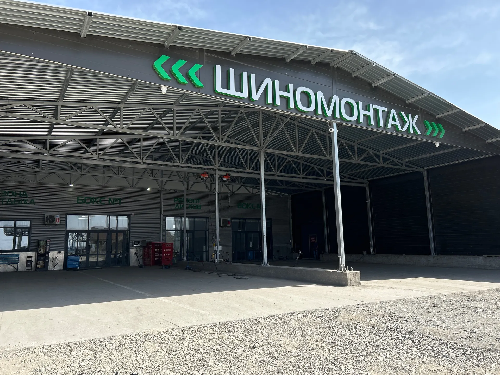
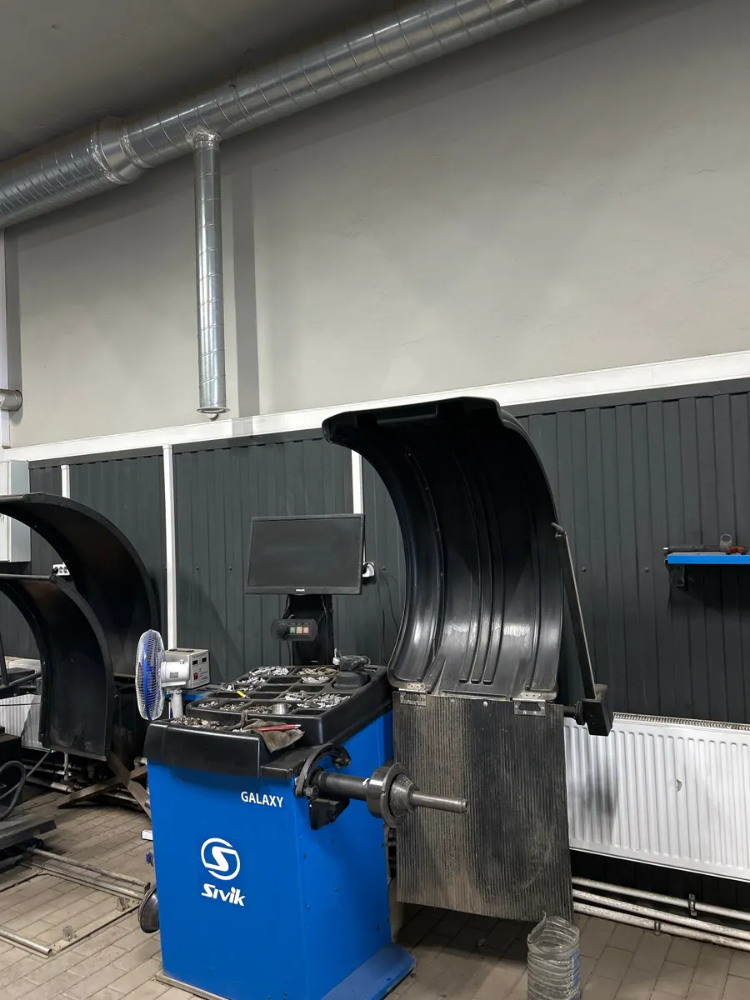
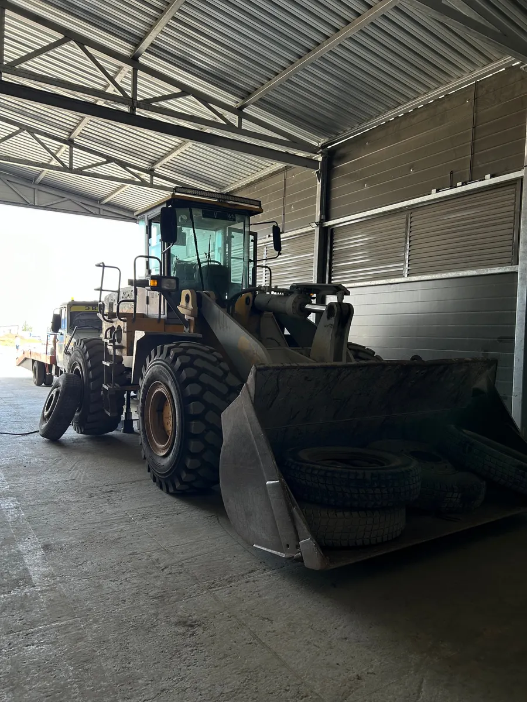
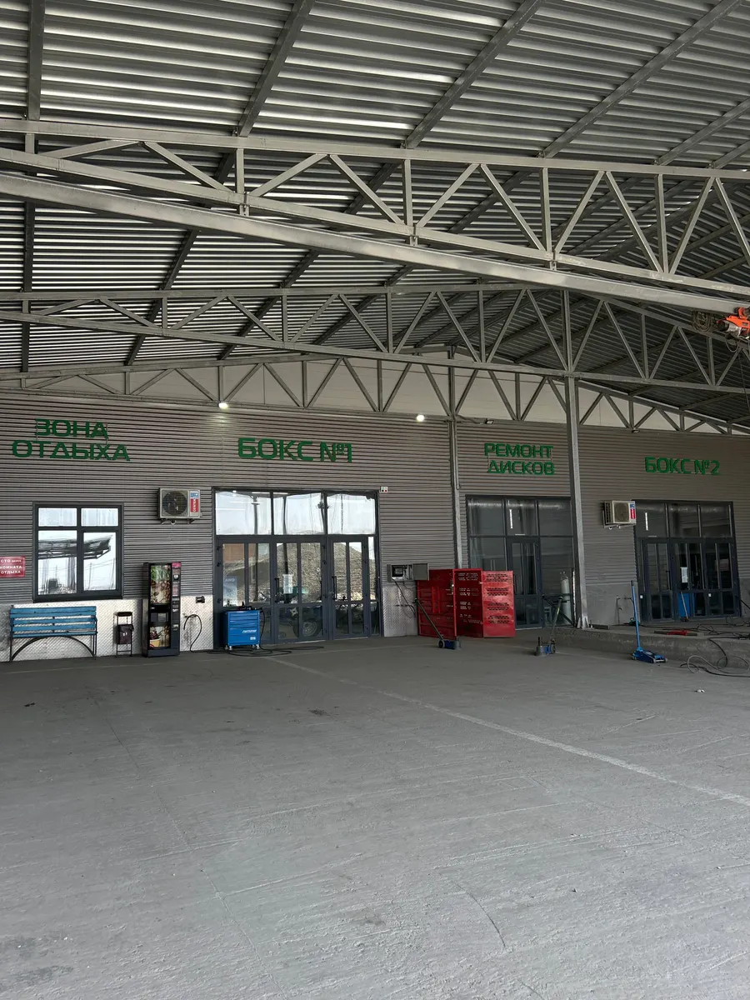

Шиномонтаж · Николаевка
Шиномонтаж в Николаевке: легковые, грузовые и сельхозколёса
Ремонтируют покрышки легковых и грузовых авто, сельхозтехники. Работаем ежедневно с 8:00 до 20:00.
- Ежедневно с 08:00 до 20:00
- Рейтинг 4,5 на Яндекс.Картах, 75 оценок
- Есть грузовой шиномонтаж и балансировка

Услуги и цены
На карточке цены не указаны. Называют при записи.
Услуги
- Шиномонтаж легкового автоуточнить
- Грузовой шиномонтажуточнить
- Балансировкауточнить
- Ремонт покрышекуточнить
Цены уточняйте у мастера при записи.
Как проходит
- 01
Записались на удобное время
В Telegram или по телефону +7 (918) 575-02-22.
- 02
Заехали в свободный бокс
Клиенты пишут, что бывают очереди, но есть навес и комната отдыха с кофейным автоматом.
- 03
Мастер сделал работу
Шиномонтаж, балансировка, ремонт покрышек. По отзыву, шины и диски перед сменой моют.



Что пишут клиенты
Работают быстро
Из отзыва: «Ребята работают быстро, ремонтируют качественно».
Берутся за грузовые колёса
Из отзыва: «Лучший грузовой монтаж в городе». Клиент пишет, что в наличии новые шины и диски, грузовые точно.
Мастер задержался и выручил
Из отзыва: Василий «задержался на работе, чем очень выручил».
Есть где подождать
Клиентка пишет про навес на несколько машин, чистую комнату отдыха и кофейный автомат.
Отзывы с Яндекс.Карт
«Отличный шиномантаж. Выполняют ремонт различных видов покрышек, и сельхозтехники и грузовых авто.»
Алексей Х. · 20 июля 2024
«Лучший шиномонтаж! Великолепный персонал , новое оборудование»
Валерия Лепило · 21 июня 2024
«Отличный шиномонтаж , в первом боксе заварили колесо за копейки и очень быстрое Клиентоориентированность на высшем уровне 🔥»
Василий Прокофьев · 21 августа 2025
Отзывы с карточки на Яндекс.Картах, без правок.
Частые вопросы
Когда вы работаете?
Ежедневно с 8:00 до 20:00.
Как записаться?
Выберите услугу, день и время выше: откроется чат в Telegram с готовым сообщением, останется нажать «Отправить». Можно позвонить: +7 (918) 575-02-22.
Берёте грузовые и сельхозколёса?
На карточке указан грузовой шиномонтаж, а клиенты пишут про ремонт покрышек сельхозтехники и грузовых авто. Размер колеса уточните при записи.
Можно оплатить картой?
Да, на карточке указаны оплата картой и наличными.
Запишитесь к своему времени
- Адрес
- ул. Ленина, 494, село Николаевка
- Часы
- Ежедневно 08:00–20:00
- Телефон
- +7 (918) 575-02-22